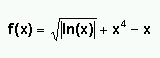

Ejercicios de depuración y logging
Depuración de cálculos
La clase Calculos de la plantilla trata de construir una serie numérica según los valores que toma X para una función como la siguiente:

Se tiene un array x en el ejercicio, con distintos valores de X, y un bucle que los va recorriendo, y asignando el valor de la función para cada uno de ellos.
Se pide:
-
Queremos comprobar qué valor toma la expresión:
Math.sqrt(Math.abs(Math.log(x[i])))
en la cuarta iteración del bucle. Añadid un breakpoint condicional para parar sólo en esa iteración, y comprobad el valor de la expresión para esa iteración. Añadid un comentario en el código indicando qué valor toma la expresión.
-
La serie se espera que sea creciente, es decir, cada nuevo elemento que se añada debe ser mayor que el anterior. Comprobad si esto se cumple sin mostrar ningún valor por la salida estándar (añadiendo el/los breakpoint(s) que consideréis, sin borrar lo anterior, y observando el valor de los elementos de la serie en cada caso). En el caso de no ser así, añadid un comentario en el código indicando por qué no es creciente (es decir, qué elementos hacen que no sea creciente).
Logs al leer ficheros
La clase PruebaFichero trata de leer un fichero predeterminado, y almacenar su contenido en un String. Está ya preconfigurada para sacar mensajes de log tipo ERROR si no encuentra el fichero, o si su lectura es errónea. La lectura se considerará errónea si el fichero tiene menos de 5 líneas, ya que hasta la 5ª línea no se espera ningún fin de fichero.
Para leer el fichero, se utiliza la clase auxiliar LeeFichero, que va leyendo las líneas y guardándolas en una cadena, que devuelve al final.
Se pide:
-
Añadir mensajes de depuración (DEBUG) tanto en PruebaFichero como en LeeFichero que indiquen qué va haciendo el programa en cada paso. Tenéis comentarios puestos por el código, indicando dónde pueden ir colocados esos mensajes
-
Modificar la configuración del logging, mediante el fichero logging.conf de la plantilla (un fichero de properties), para que:
- Que todos los mensajes vayan a la consola, con el formato simple.
-
Además, que la salida de mensajes de tipo ERROR se vuelque a un fichero errores.log, con el siguiente formato:
[dia/mes/año hora:minuto:segundo] - tipo error - mensaje
Deberéis modificar la llamada al método configure del logger para que tome el fichero de configuración como parámetro.
- Probad el programa sin pasarle fichero de lectura (para que dé el error de que no lo encuentra), y pasándole uno con menos de 5 líneas (para que dé el error de formato incorrecto). Comprobad que los mensajes de log se generan bien, y donde toca.
- (*) Mediante el fichero de configuración, haced que el fichero errores.log no pueda exceder de 1 KB (deberéis utilizar un RollingFileAppender en lugar de un FileAppender) y aseguraos de que no se sobreescriba su contenido tras cada nueva ejecución. Probad a ejecutar el programa varias veces, provocando errores que se guarden en dicho fichero, y comprobad cómo se rotan los mensajes.
- (*) Probad a que se guarden 2 copias de respaldo del fichero errores.log, y generad mensajes suficientes en él para que sobrepase el tamaño de un fichero. Observad cómo se generan los ficheros de respaldo, y qué nombres reciben.